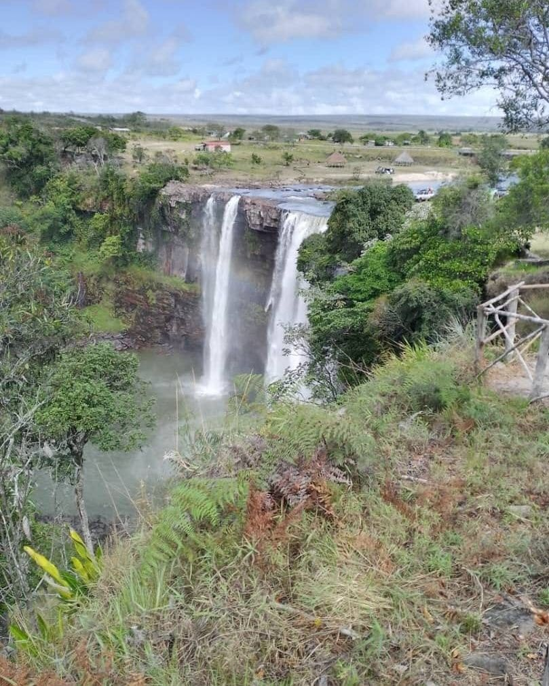
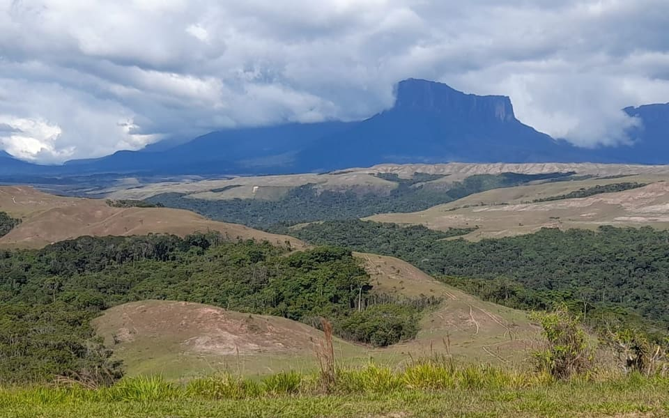
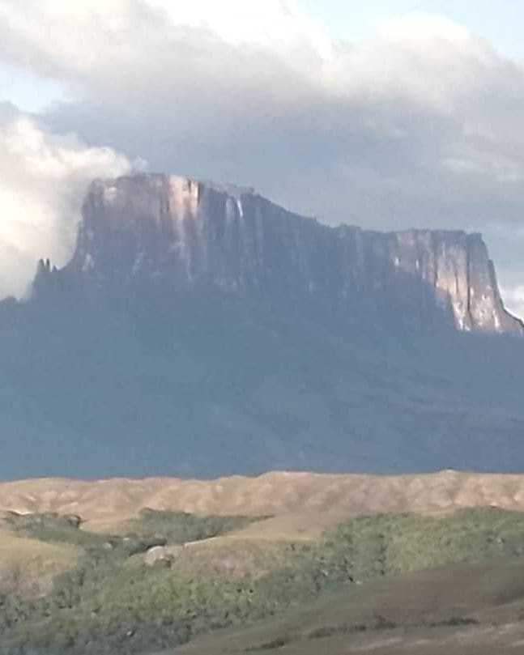
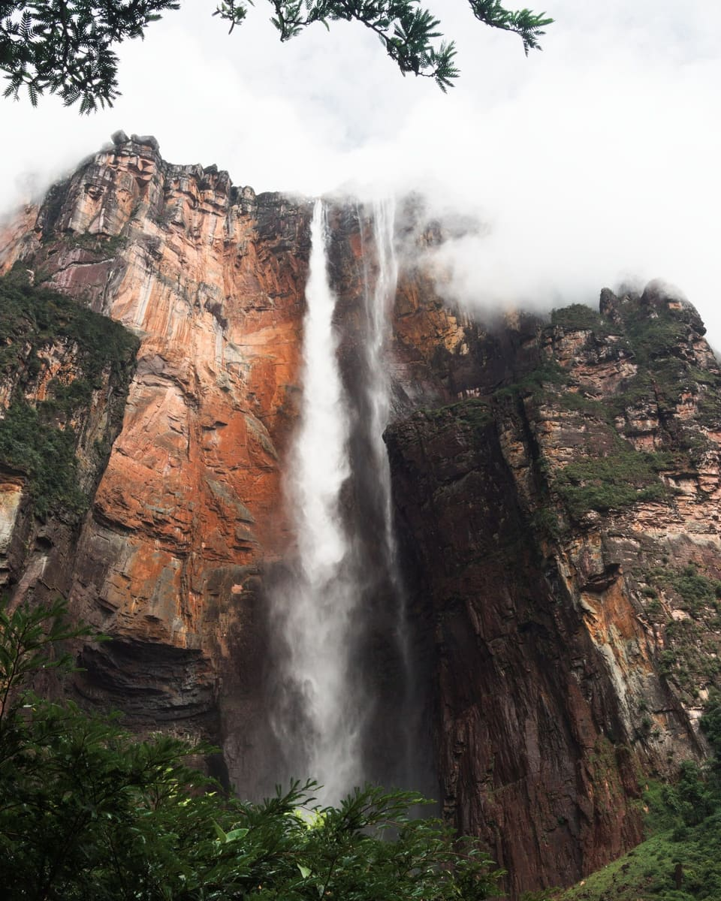
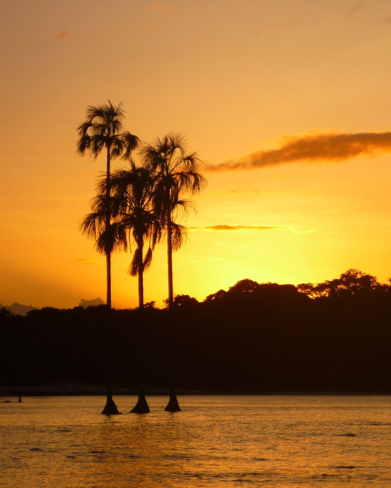
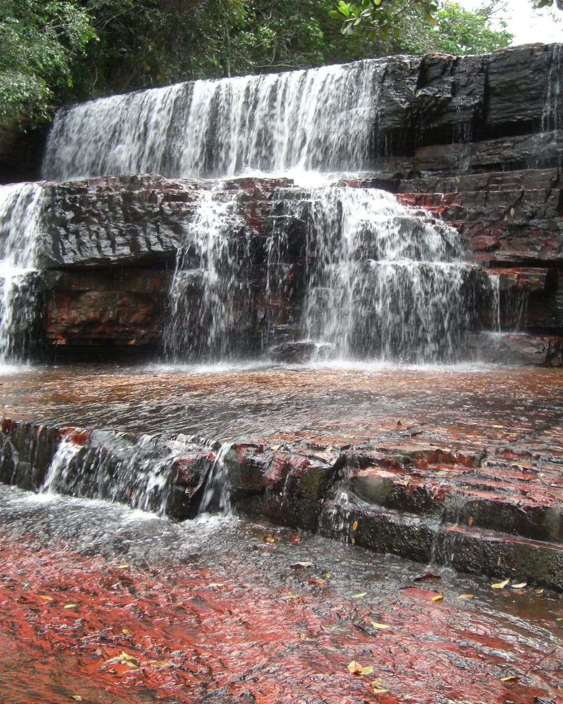
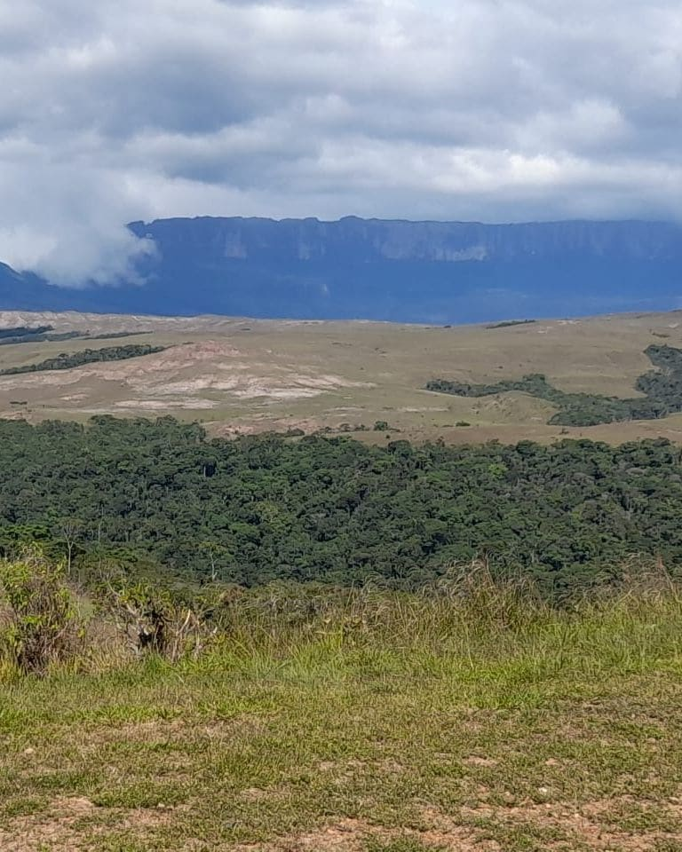
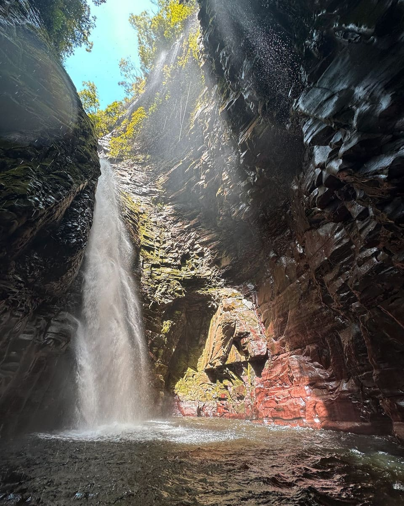

Ivarkarima Expediciones aparece como operador recomendado en la guía Lonely Planet Venezuela (ediciones 2001 y 2007).
Según la guía: una operadora pequeña, con precios razonables y salidas frecuentes a la Gran Sabana y al Salto Ángel.
Resumen propio de la reseña. Esta mención no implica patrocinio ni aval de la editorial.

Nuestra historia
30 años siendo de aquí
El nombre Ivarkarima honra al tepuy homónimo, parte de la cadena oriental de la Gran Sabana. Diego José Pablo Rizzo Guerrero guía viajeros por estas tierras desde 1989, y en 1996 fundó la empresa para compartir los caminos que conoce como su propia casa.
No improvisamos rutas ni tercerizamos la experiencia: nuestro equipo de guías, choferes y baquianos trabaja junto a las comunidades Pemón, con un profundo respeto por su cultura y por la naturaleza que nos recibe en cada expedición. Te atendemos en español e inglés, y también en algo de italiano.
Nuestra trayectoria
1989Nuestro fundador empieza a guiar viajeros en la Gran Sabana.
1996Inicio de operaciones de Ivarkarima Expediciones.
2001Primera mención en la guía Lonely Planet Venezuela.
2007Recomendada de nuevo en Lonely Planet Venezuela.
“No somos turistas — somos de aquí. Cada sendero, cada cascada, cada amanecer sobre los tepuyes los conocemos como nuestra propia casa.”
Respeto por las comunidades PemónTurismo responsableEquipo familiar desde 1996
Nuestras expediciones
Vive la Gran Sabana a tu manera
Cada expedición se arma con transporte, alojamiento y guía incluidos. Los precios varían según grupo y temporada — consúltanos por WhatsApp.
015 días / 4 noches

Gran Sabana Clásica
Saltos de agua, la Quebrada de Jaspe, comunidades Pemón y los tepuyes más emblemáticos, recorridos en 4x4.
Seis destinos icónicos del Parque Nacional Canaima y la Gran Sabana.

Monte Roraima
El tepuy más famoso del mundo, cuna de leyendas Pemón y escenario de un ecosistema único en la cima.

Salto Ángel
La caída de agua más alta del mundo, escondida en la selva del Auyantepuy.

Canaima
Una laguna rodeada de saltos de agua y playas de arena rosa, puerta de entrada al parque nacional.

Quebrada de Jaspe
Un lecho de piedra jaspe rojiza bajo aguas cristalinas, único en el planeta.

Gran Sabana
Sabanas infinitas salpicadas de tepuyes, ríos de aguas negras y horizontes que no terminan nunca.

Kavac
Un cañón de aguas rojas tallado en la roca, administrado y guiado por la comunidad Pemón local.
Galería
Momentos de la expedición
Paisajes, campamentos y viajeros reales en la Gran Sabana.
Por qué elegirnos
Experiencia que se siente
Seguridad y experiencia comprobada
30 años como empresa, y más de 35 de experiencia en la zona, nos han enseñado a anticipar el clima, el terreno y cada detalle logístico.
Experiencia desde 1989
Conocemos cada sendero de primera mano y coordinamos con las comunidades Pemón de cada zona, que comparten su cultura en el camino.
Respeto ambiental y cultural
Trabajamos de la mano con las comunidades Pemón y protegemos el entorno que hace posible cada expedición.
Grupos pequeños
Priorizamos la atención personalizada por encima del volumen de viajeros.
Cobertura de los destinos clave
Roraima, Salto Ángel, Canaima, Kavac y toda la Gran Sabana bajo un mismo operador.
Atención personalizada
Te acompañamos en español o inglés (y algo de italiano) desde la primera consulta hasta el regreso a casa.
Testimonios
Lo que dicen nuestros viajeros
Reseñas de ejemplo — reemplázalas por opiniones reales de tus viajeros (Google, TripAdvisor, WhatsApp).
Reseña de ejemplo
★★★★★
“Una experiencia que cambia la forma en que ves la naturaleza. El equipo conoce cada rincón como si fuera su propia casa.”
JP
[Nombre del viajero]
[País de origen]
Reseña de ejemplo
★★★★★
“El ascenso al Roraima con Ivarkarima fue impecable: guías atentos, buena comida y una seguridad que se sintió en cada paso.”
MG
[Nombre del viajero]
[País de origen]
Reseña de ejemplo
★★★★★
“Como fotógrafo he viajado por medio mundo — pocos lugares me impresionaron como la Gran Sabana con estos guías.”
RT
[Nombre del viajero]
[País de origen]
Preguntas frecuentes
Todo lo que debes saber
La temporada seca (noviembre a abril) ofrece caminos más accesibles y cielos despejados. La temporada de lluvias (mayo a octubre) trae los saltos de agua en su máximo esplendor. Cada época tiene su encanto — te recomendamos según el tour que elijas.
Depende de la expedición. La Gran Sabana Clásica y Canaima son accesibles para casi cualquier persona con condición física básica. El ascenso al Roraima exige buena condición física, ya que implica varios días de trekking.
Ropa de secado rápido, impermeable ligero, calzado de trekking, protector solar, repelente y una linterna. Al confirmar tu reserva te enviamos una lista completa según el tour.
Coordinamos el pago y las condiciones directamente por WhatsApp según el tour, el grupo y la temporada. Solicitamos un abono para confirmar la reserva y el resto se coordina antes o durante la expedición.
Si cancelas con más de 30 días de anticipación, te devolvemos el abono descontando los gastos de terceros que no se puedan recuperar (por ejemplo, boletos aéreos o permisos). Entre 30 y 15 días antes se reintegra el 50 % del abono; con menos de 15 días el abono no es reembolsable. Si por clima o seguridad debemos suspender una salida, la reprogramamos sin costo. Los detalles están en los Términos y Condiciones.
Sí. Llevamos 30 años operando en la zona, y nuestro fundador guía aquí desde 1989, con protocolos de seguridad probados, guías con experiencia y conocimiento real del terreno y del clima.
Varía según la expedición: los tours de baja exigencia física reciben familias con niños, mientras que el ascenso al Roraima recomienda una edad mínima por el esfuerzo físico. Consúltanos tu caso particular.
Te atendemos en español e inglés, y también en algo de italiano. En lugares como Canaima y Kavac te acompañan además guías locales de las comunidades Pemón.
Generalmente por vía terrestre hasta Santa Elena de Uairén, o por vía aérea hasta Canaima según el tour. Te damos indicaciones detalladas al confirmar tu expedición.
Contacto
Empecemos a planear
Cuéntanos qué expedición te interesa y te respondemos a la brevedad.
Villa Alianza 2, Calle Toronto, Casa 43, Puerto Ordaz, Estado Bolívar, Venezuela
Síguenos
3 días / 2 noches
Salto Ángel (Canaima) — itinerario completo
Tres días y dos noches para llegar hasta el Kerepakupai Vená, la caída de agua más alta del mundo, navegando en curiara por los ríos Carrao y Churún.
Día 1 — Llegada y exploración de la Laguna de Canaima
Mañana
Arribo en avión al aeródromo de Canaima (vuelo desde Caracas, Puerto Ordaz o Ciudad Bolívar). Recibimiento por los guías locales de la etnia Pemón y traslado a la posada para dejar el equipaje.
Almuerzo
Comida típica en el campamento.
Tarde
Excursión en curiara (embarcación indígena motorizada) navegando la Laguna de Canaima. Desembarco en Salto El Sapo y Salto El Hacha, con caminata por el sendero detrás de la cortina de agua.
Noche
Cena y pernocta en posada/campamento, con cama y ventilador.
Día 2 — Expedición al Salto Ángel (Kerepakupai Vená)
Madrugada
Desayuno temprano e inicio del traslado fluvial río arriba por el Río Carrao y luego por el Río Churún hacia el Auyantepuy, bordeando la Sabana de Mayupa y la Isla Orquídea (navegación de 4 a 5 horas aprox.).
Mediodía
Llegada a Isla Ratón (frente al Auyantepuy) e inicio de un trekking de 1 a 1.5 horas por la selva hasta el Mirador Laime.
Tarde
Vista al Salto Ángel en todo su esplendor, con posibilidad de nadar en la poza natural de la base (según clima y caudal del río). Retorno a la base.
Noche
Cena en el campamento rústico frente al Salto Ángel y pernocta tradicional en hamacas con mosquitero.
Día 3 — Retorno a Canaima y vuelo de salida
Mañana
Desayuno al amanecer sobre el Auyantepuy y embarque en las curiaras para navegar río abajo de regreso al pueblo de Canaima.
Mediodía
Tiempo libre para comprar artesanía Pemón, visitar la playa de la laguna o tomar un baño final.
Tarde
Traslado al aeródromo de Canaima para el vuelo de retorno.
Qué suele incluir el paquete
Boletos aéreos e impuestos de parque
Comidas completas y bebidas no alcohólicas
Guiatura en español/inglés y traslados fluviales
Hospedaje: 1 noche en cama (posada) y 1 noche en hamaca (campamento en la selva)
Indumentaria y equipo recomendado
Ropa de secado rápido (manga larga para sol y mosquitos)
Impermeable o poncho (esencial tras las cascadas y en los trayectos en bote)
Calzado cómodo con buen agarre y sandalias acuáticas
Bolsa estanca/seca para proteger cámaras y celulares
Este plan combina el ascenso a la icónica formación rocosa del Escudo Guayanés con un descanso activo en las instalaciones del campamento recreacional adyacente.
07:00 AM – 07:30 AM
Llegada y registro
Encuentro en el Campamento Recreacional Piedra del Elefante. Charla de seguridad e hidratación inicial.
07:30 AM – 09:30 AM
Ascenso al monolito
Caminata hacia la cima de la Piedra del Elefante. Es clave subir temprano para evitar la radiación solar intensa sobre el granito.
09:30 AM – 10:30 AM
Cumbre y fotografía
Tiempo libre en la cima para contemplar la vista panorámica del río Caroní, la vegetación de sabana y tomar fotografías.
10:30 AM – 11:30 AM
Descenso al campamento
Retorno guiado hacia la base, aprovechando el sendero para avistamiento de fauna y flora típica.
11:30 AM – 01:00 PM
Almuerzo y descanso
Uso de churuatas en el campamento para almorzar (comida rápida, parrilla o sancocho) y reposar a la sombra.
01:00 PM – 02:30 PM
Actividades recreativas
Uso de la piscina del campamento, áreas verdes, canchas de juegos o paseos en kayak (según disponibilidad del centro).
02:30 PM – 03:00 PM
Cierre y retorno
Recogida de pertenencias, hidratación final y salida de las instalaciones.
City Tour Histórico (Ciudad Bolívar) — itinerario completo
El City Tour Histórico en Ciudad Bolívar, saliendo desde Puerto Ordaz, abarca en 6 horas los aspectos más representativos de la capital histórica de Venezuela.
Traslado y cruce sobre el río Orinoco (~1 h 15 min de ida): salida desde Puerto Ordaz rumbo a Ciudad Bolívar cruzando el icónico Puente Angostura.
Recorrido a pie por el Casco Histórico: visita guiada alrededor de la Plaza Bolívar:
Casa del Congreso de Angostura: lugar donde Simón Bolívar pronunció su célebre discurso en 1819.
Catedral Metropolitana de Ciudad Bolívar: templo de arquitectura colonial frente a la plaza principal.
Casa de la XII Angustia / Casa San Isidro: quinta donde el Libertador residió y preparó documentos históricos.
Muro de Fusilamiento de Manuel Piar: detalle histórico junto al costado de la catedral.
Paseo del Orinoco y Piedra del Medio: caminata con vista panorámica hacia el majestuoso río Orinoco.
Tiempo para gastronomía local: breve parada para degustar platos o dulces típicos de la región (como el queso de mano o la sapoara, según la época).
Retorno a Puerto Ordaz (~1 h 15 min de regreso).
Detalles clave
Duración: 6 horas en total (incluyendo trayectos de traslado)
Modalidad: transporte terrestre privado/turístico más caminata guiada a pie en la zona colonial
Recomendaciones: ropa fresca, calzado cómodo para empedrado, protector solar e hidratación
Paseo en Bote — Caroní y Orinoco — itinerario completo
Un paseo de dos horas en bote desde el Club Náutico de Puerto Ordaz ofrece un recorrido intenso y visualmente impactante por la confluencia de dos de los ríos más importantes de Venezuela y sus saltos de agua asociados.
Salida: Club Náutico de Puerto Ordaz. El recorrido comienza navegando las aguas oscuras y tranquilas del río Caroní, con vegetación ribereña densa e infraestructura industrial a lo lejos, típica de la zona de Guayana.
El encuentro de las aguas (confluencia Caroní–Orinoco). El fenómeno central del paseo: a pocos minutos de navegación, la lancha se aproxima al punto donde el río Caroní desemboca en el inmenso río Orinoco.
El contraste: una línea divisoria natural muy definida — de un lado, las aguas oscuras y casi negras del Caroní, ricas en ácidos húmicos; del otro, las aguas turbias y amarillentas del Orinoco, cargadas de sedimentos.
La dinámica: las diferentes densidades y temperaturas de ambos ríos hacen que tarden varios kilómetros en mezclarse por completo — el bote suele navegar sobre esa línea.
Navegación hacia el Parque Cachamay. Dejando atrás el encuentro, la embarcación remonta el río en dirección al Parque Cachamay.
Los Saltos de Cachamay: el bote se acerca a los rápidos y cascadas, con la fuerza del río estrellándose contra las rocas entre abundante vegetación. Se siente el rocío y se escucha el estruendo del agua.
Visita al Parque La Llovizna. La lancha se dirige hacia el sistema de caídas de agua de La Llovizna, otra sección vital del río Caroní inferior.
El Salto La Llovizna: el salto más famoso del parque — el bote se aproxima a la base de la cascada principal.
La experiencia: la caída de agua genera una fina llovizna constante que cubre el área, entre bosque de galería exuberante y múltiples brazos de agua sobre las rocas oscuras del Escudo Guayanés.
Retorno. El viaje concluye con la navegación de regreso al Club Náutico de Puerto Ordaz, completando el circuito de aproximadamente dos horas.